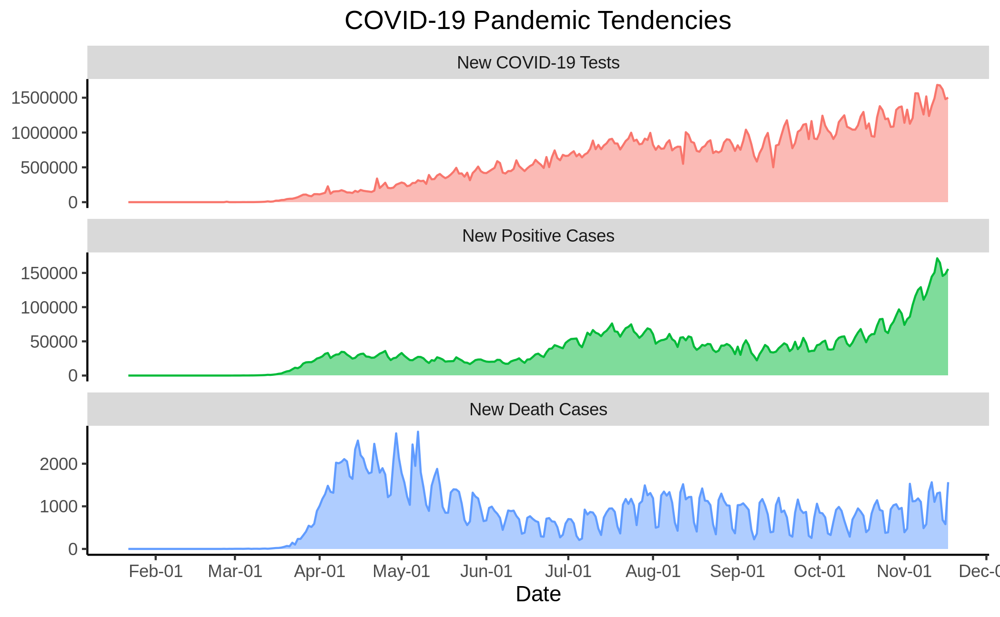
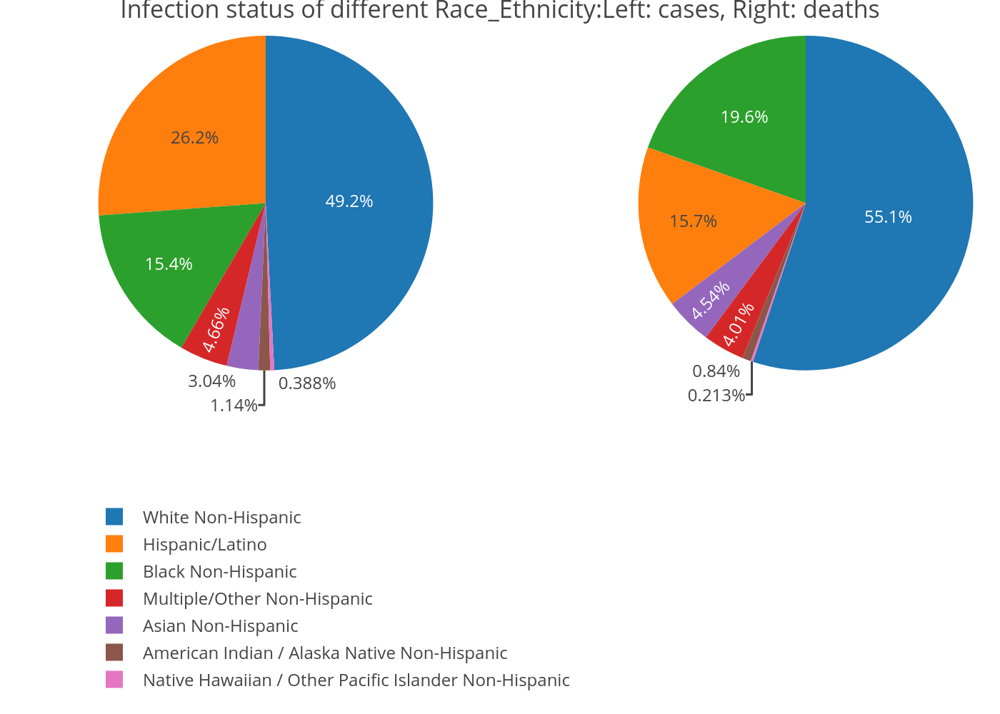
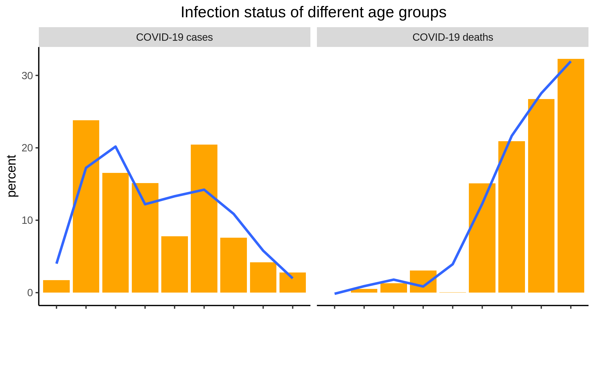
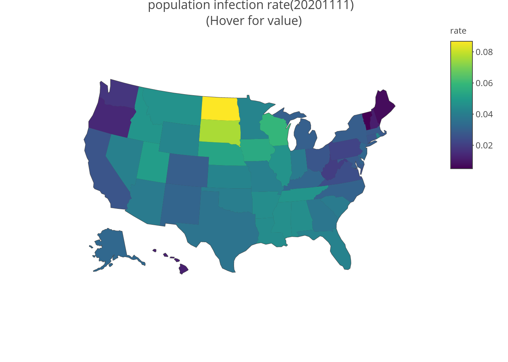
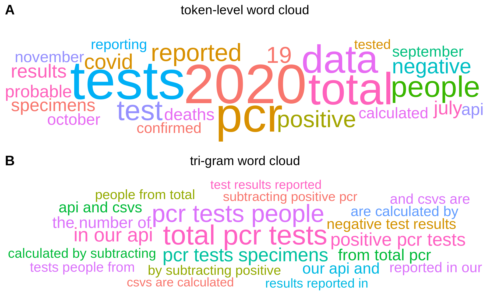

Introduction
COVID-19 is a global pandemic that affects our health and life. By exploring the COVID-19 condition, we can make take possible actions to better contain its spread and make plans for the future. In this project, we mainly study the COVID-19 condition in the United States.
How is the COVID-19 condition in the United States now? The question can be answered from the following perspectives:
- Q1: Condition Overview: latest numbers about the tests, confirmed cases, deaths and recoveries.
- Q2: Pandemic Tendency: the tendency of COVID-19 infection in terms of new tests, new positives and new deaths.
- Q3: Community Infection Status: the infection status of different race/ethnicity and age groups.
- Q4: Population Infection Rate: the population infection rate in different states, which can be a indicator of virus spreading level.
- Q5: Key Information: the key latest information or notes we should pay attention to.
Methods
The data for this study comes from three sources:
- https://covidtracking.com/data/api
- https://covid.cdc.gov/covid-data-tracker/#demographics
- https://github.com/nytimes/covid-19-data
The data are details are described as follows:
- cases_by_age_group.csv # COVID-19 cases in United States grouped by age bins, last updated at Nov 17 2020 12:18PM.
- cases_by_race_ethnicity__all_age_groups.csv # COVID-19 cases in United States grouped by races/ethnicities, last updated at Nov 17 2020 12:18PM.
- daily.csv # historical COVID-19 of the United States, daily recorded
- deaths_by_age_group.csv # COVID-19 deaths in United States grouped by age bins, last updated at Nov 17 2020 12:18PM.
- deaths_by_race_ethnicity__all_age_groups.csv # COVID-19 deaths in United States grouped by races/ethnicities, last updated at Nov 17 2020 12:18PM.
- states_current.csv # The most recent COVID data for every state.
- states_daily.csv # all COVID data available for every state since tracking started.
- states_info.csv # Basic information about states, including notes about the data.
- us_census_2018_population_estimates_states.csv # population data of each states
This project uses the following packages to achieve the analysis:
| packages | functions |
|---|---|
| data.table | data readin |
| tidyverse | data wrangling |
| dplyr | data transforming |
| plotly | generate interactive graphics |
| DT | render R data frames to tables |
| knitr | render rmarkdown files to htmls, pdfs, etc. |
| stringr | handle strings in R |
| sjPlot | render data frames to publish-style tables |
| ggthemes | themes for ggplot graphics |
| scales | tool for graphics scaling |
| ggwordcloud | generate word cloud |
| ggpubr | arrange ggplot objects |
Results
Q1: Condition Overview
Here is the summary of the latest numbers about the total tests, accumulated confirmed case numbers, accumulated deaths, accumulated recoveries.
| date | total tests | accumulated confirmed case numbers | accumulated recoveries | accumulated deaths |
|---|---|---|---|---|
| 20201117 | 170315721 | 11202899 | 4293640 | 239784 |
Q2: Pandemic Tendency
The tendency of COVID-19 can reflect how will this pandemic will proceed into the future. Is it getting better or worse? We can illustrate the pandemic tendency using three important variables: New COVID-19 Tests, New Positive Cases, New Death Cases. The result is shown in the following graph.
 We can see that we are doing more and more COVID-19 testing. And the line graph of new positive cases depicts the tendency of the COVID-19 pandemic. It shows there are more and more people getting infected with COVID-19. The curve indicates that the virus spreading is speeding up as the time goes. Therefore, we have not reached the turning point in which the actual condition gets better.
From the curve of the New death cases, we can see the new death cases is becoming flat and not increasing like new confirmed cases, plausibly indicating that COVID-19 virus is less harmful than before or we are more experienced to cure the disease. However, this may subject to many factors’ influences.
Q3: Community Infection Status
Different age groups may have different susceptibility towards the virus due to their different immune levels. In addition, the virus infection may also differs with respect to races and ethnicities. We gathered the data from https://covid.cdc.gov to discover the infection status of different age groups or races and ethnicities.

From the graph, we can find that the differences among races and ethnicities are large. White Non-Hispanic has both the highest infection rate and covid-death rate, whereas Asian Non-Hispanic, American Indian, Native Hawaiian has significantly low infection rate and death rate.

This graph of infection of different age groups tells us the younger people have a higher infection rate than other populations. Nevertheless, the older people tends to be impacted seriously by the virus, thus leading to the higher death rate among the population. We add a smooth line to the differences using loess method.
Q4: Population Infection Rate
The population infection rate in different states can serve as an indicator of virus spreading level.

From the map, we can see that different states have different population infection rate now. Some states such as are serious than others. Another thing to pay attention to is that the population infection rate has reached a significant level of .
Q5: Key Information
The COVID Tracking Project also gathers notes from every state. These notes are informative for us to know about what is happing with the COVID-19 status with the state. In other words, we can catch the latest and most important information reading these notes. Simple text-mining like n-grams can give us a rough topic about the pandemic condition. Here, we choose tri-grams.

From the statistics of tri-grams, we can infer that “PCR test” is the most important information across all states. It means that most states is mainly focusing on COVID-19 testing now.
Conclusion and Summary
How is the COVID-19 condition in the United States now?
To begin with, the COVID-19 condition is not optimistic now, we can see the huge numbers of cases in the overview part. Firstly, the infection is still continuously growing with a higher and higher growth rate. Secondly, the virus infections and impacts are different in terms of different age groups and races/ethnicities. Thirdly, The population infection rate is different across different states and has already reached a significant level of around 2% now. Finally, most states are mainly working on doing COVID-19 testing now, this is the key information we should pay attention to.